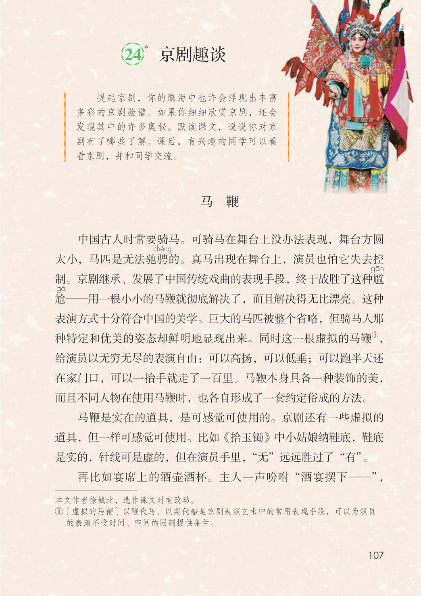
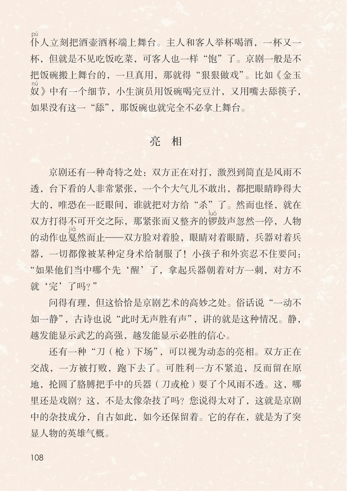

第七单元 · 第 24 课
京剧趣谈
课后练习
- 提起京剧，你的脑海中也许会浮现出丰富多彩的京剧脸谱。如果你细细欣赏京剧，还会发现其中的许多奥秘。默读课文，说说你对京剧有了哪些了解。课后，有兴趣的同学可以看看京剧，并和同学交流。马 鞭中国古人时常要骑马。可骑马在舞台上没办法表现，舞台方圆太小，马匹是无法驰骋的。真马出现在舞台上，演员也怕它失去控制。京剧继承、发展了中国传统戏曲的表现手段，终于战胜了这种尴gS—用一根小小的马鞭就彻底解决了，而且解决得无比漂亮。这种尬表演方式十分符合中国的美学。巨大的马匹被整个省略，但骑马人那①，种特定和优美的姿态却鲜明地显现出来。同时这一根虚拟的马鞭给演员以无穷无尽的表演自由：可以高扬，可以低垂；可以跑半天还在家门口，可以一抬手就走了一百里。马鞭本身具备一种装饰的美，而且不同人物在使用马鞭时，也各自形成了一套约定俗成的方法。马鞭是实在的道具，是可感觉可使用的。京剧还有一些虚拟的道具，但一样可感觉可使用。比如《拾玉镯》中小姑娘纳鞋底，鞋底是实的，针线可是虚的，但在演员手里，“无”远远胜过了“有”。再比如宴席上的酒壶酒杯。主人一声吩咐“酒宴摆下—”，的表演不受时间、空间的限制提供条件。
文字内容 PDF 第 113 页
仆人立刻把酒壶酒杯端上舞台。主人和客人举杯喝酒，一杯又一杯，但就是不见吃饭吃菜，可客人也一样“饱”了。京剧一般是不把饭碗搬上舞台的，一旦真用，那就得“狠狠做戏”。比如《金玉奴》中有一个细节，小生演员用饭碗喝完豆汁，又用嘴去舔筷子，如果没有这一“舔”，那饭碗也就完全不必拿上舞台。
亮 相
京剧还有一种奇特之处：双方正在对打，激烈到简直是风雨不透，台下看的人非常紧张，一个个大气儿不敢出，都把眼睛睁得大大的，唯恐在一眨眼间，谁就把对方给“杀”了。然而也怪，就在双方打得不可开交之际，那紧张而又整齐的锣鼓声忽然一停，人物的动作也戛然而止—双方脸对着脸，眼睛对着眼睛，兵器对着兵器，一切都像被某种定身术给制服了！小孩子和外宾忍不住要问：“如果他们当中哪个先‘醒’了，拿起兵器朝着对方一刺，对方不就‘完’了吗？”
问得有理，但这恰恰是京剧艺术的高妙之处。俗话说“一动不如一静”，古诗也说“此时无声胜有声”，讲的就是这种情况。静，越发能显示武艺的高强，越发能显示必胜的信心。
还有一种“刀（枪）下场”，可以视为动态的亮相。双方正在交战，一方被打败，跑下去了。可胜利一方不紧追，反而留在原地，抡圆了胳膊把手中的兵器（刀或枪）耍了个风雨不透。这，哪里还是戏剧？这，不是太像杂技了吗？您说得太对了，这就是京剧中的杂技成分，自古如此，如今还保留着。它的存在，就是为了突显人物的英雄气概。
原版对照
原书页面与全部插图
点击图片可查看大图。

